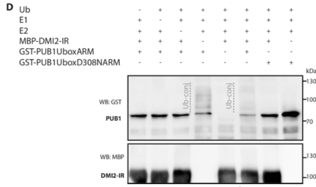

NORK (Nodulation receptor kinase; also DMI2, DOES NOT MAKE INFECTIONS 2, and MtSYMRK) is a single-pass transmembrane receptor-like serine/threonine protein kinase of Medicago truncatula with a signal peptide, an extracellular malectin-like domain followed by leucine-rich repeats, a transmembrane helix and a cytoplasmic kinase domain. It is a core component of the common symbiosis signalling pathway (CSSP) shared by the rhizobial root-nodule symbiosis and the arbuscular mycorrhizal (AM) symbiosis: dmi2 null mutants are blocked in Nod factor-induced root hair responses, nodulin gene expression, cortical cell division and nuclear-associated calcium spiking, and fail to form both nodules and AM associations. NORK acts downstream of the LysM receptor kinases (NFP/LYK3 for Nod factors) and upstream of DMI1-dependent calcium spiking and the nuclear decoder CCaMK/DMI3. No ligand for its ectodomain has been identified. The recombinant kinase domain autophosphorylates and trans-phosphorylates substrates in vitro, including the E3 ubiquitin ligase PUB1 (a negative regulator of both symbioses) and the LysM receptor kinase LYK3; it also binds HMG-CoA reductase 1. NORK localises to the plasma membrane of root cells and to the membrane surrounding infection threads in nodules, and is additionally required in nodules for release of rhizobia from infection threads and symbiosome formation. The two symbiotic roles are genetically separable: the kinase-inactive G795E (R38) allele abolishes nodulation but leaves mycorrhization intact.
| GO Term | Evidence | Action | Reason |
|---|---|---|---|
|
GO:0004672
protein kinase activity
|
IDA
PMID:26839127 PUB1 Interacts with the Receptor Kinase DMI2 and Negatively ... |
ACCEPT |
Summary: Recombinant DMI2/NORK kinase domain autophosphorylates and directly phosphorylates the E3 ubiquitin ligase PUB1 in vitro (Vernie et al. 2016); independently confirmed by Jayaraman et al. 2017, where NORK trans-phosphorylates casein and kinase-dead LYK3.
Reason: Direct biochemical evidence of protein kinase activity on the target itself. The term is general (the more specific serine/threonine kinase terms are also annotated) but correct, and the curator-asserted IDA is consistent with all available data.
Supporting Evidence:
PMID:26839127
we show that PUB1 also interacts with and is phosphorylated by DOES NOT MAKE INFECTIONS 2, the key symbiotic receptor kinase of the common symbiosis signaling pathway
PMID:28267253
the detection of the LYK3 band implies that LYK3 is indeed trans-phosphorylated by NORK
|
|
GO:0004672
protein kinase activity
|
IEA
GO_REF:0000002 |
ACCEPT |
Summary: InterPro2GO mapping from the Ser/Thr kinase catalytic domain and active site signatures. NORK has a canonical kinase domain (residues 596-873) with a predicted catalytic aspartate and ATP-binding lysine.
Reason: Electronic inference fully consistent with experimental kinase activity on NORK itself (PMID:26839127, PMID:28267253).
Supporting Evidence:
PMID:28267253
As expected, the wild-type versions of LYK3 and NORK exhibited auto-phosphorylation (Figure 3A and 3B) and trans-phosphorylation (as indicated by the phosphorylation of casein) activities
|
|
GO:0004674
protein serine/threonine kinase activity
|
IEA
GO_REF:0000003 |
ACCEPT |
Summary: EC 2.7.11.1 mapping. UniProt records both serine and threonine phosphorylation (RHEA:17989 and RHEA:46608) from Vernie et al. 2016, and Jayaraman et al. 2017 mapped NORK-phosphorylated serines on LYK3 and NORK autophosphorylation sites including Ser and Thr residues.
Reason: Correct and appropriately specific description of the catalytic activity; this is the core molecular function of NORK.
Supporting Evidence:
PMID:28267253
We identified that sites Ser-269, Ser-273, Ser-307, Ser-323 and Ser-471 of LYK3 (as a control only mLYK3 was used) were phosphorylated by NORK using Mass spectrometry
|
|
GO:0005515
protein binding
|
IPI
PMID:26839127 PUB1 Interacts with the Receptor Kinase DMI2 and Negatively ... |
MODIFY |
Summary: Interaction with PUB1 (E4NKF8), a U-box E3 ubiquitin ligase, shown by yeast two-hybrid and co-immunopurification; PUB1 is also a phosphorylation substrate of NORK.
Reason: The interaction is real but "protein binding" is uninformative. The cited paper establishes that the partner is an E3 ubiquitin ligase, so the more informative "ubiquitin protein ligase binding" (GO:0031625) is directly supported by the same evidence. The functional relationship is kinase-substrate (NORK phosphorylates PUB1); PUB1 did not detectably ubiquitinate DMI2 according to the deep-research summary of the full text.
Proposed replacements:
ubiquitin protein ligase binding
Supporting Evidence:
PMID:26839127
PUB1, an E3 ubiquitin ligase, which interacts with and is phosphorylated by the LYK3 symbiotic receptor kinase
PMID:26839127
we show that PUB1 also interacts with and is phosphorylated by DOES NOT MAKE INFECTIONS 2
file:MEDTR/NORK/NORK-deep-research-falcon.md
Yeast two-hybrid and co-immunopurification support DMI2–PUB1 binding; recombinant DMI2 autophosphorylates and directly phosphorylates PUB1 in vitro
|
|
GO:0005524
ATP binding
|
IEA
GO_REF:0000002 |
ACCEPT |
Summary: Kinase domain ATP-binding signature (residues 602-610 and Lys624). ATP binding is intrinsic to the demonstrated kinase activity.
Reason: Correct structural inference for an active protein kinase; non-informative beyond the kinase activity terms but not wrong.
Supporting Evidence:
PMID:28267253
As expected, the wild-type versions of LYK3 and NORK exhibited auto-phosphorylation
|
|
GO:0016020
membrane
|
IEA
GO_REF:0000044 |
ACCEPT |
Summary: UniProt subcellular-location mapping (single-pass membrane protein, by similarity/topology). NORK has a signal peptide and a single transmembrane helix (522-542).
Reason: Correct but general. Experimental localisation shows NORK is at the plasma membrane and the infection-thread membrane (PMID:16006515); a NEW plasma membrane annotation is proposed below to capture the specific location.
Supporting Evidence:
PMID:16006515
The protein locates to the host cell plasma membrane and to the membrane surrounding the infection threads.
|
|
GO:0046777
protein autophosphorylation
|
IDA
PMID:26839127 PUB1 Interacts with the Receptor Kinase DMI2 and Negatively ... |
ACCEPT |
Summary: Purified DMI2 kinase domain autophosphorylates in vitro (Vernie et al. 2016); autophosphorylation was also shown by Jayaraman et al. 2017, who mapped at least 37 NORK phosphosites and showed the G794E (R38) mutant lacks autophosphorylation.
Reason: Directly demonstrated on the target. Autophosphorylation is a regulatory property of the kinase (SYMRK kinase activity depends on its phosphorylation status) rather than its biological output, but the annotation is accurate.
Supporting Evidence:
file:MEDTR/NORK/NORK-deep-research-falcon.md
Purified NORK/DMI2 intracellular kinase autophosphorylates and trans-phosphorylates substrates; kinase-dead G794E lacks activity
PMID:28267253
At least 37 phosphorylation sites of NORK were identified in this study
|
|
GO:0106310
protein serine kinase activity
|
EXP
PMID:26839127 PUB1 Interacts with the Receptor Kinase DMI2 and Negatively ... |
ACCEPT |
Summary: UniProt Rhea-based curation (RHEA:17989) from the PUB1 trans-phosphorylation and autophosphorylation assays of Vernie et al. 2016. Serine phosphorylation of a substrate by NORK is independently confirmed by MS-mapped serines on LYK3 (Jayaraman et al. 2017).
Reason: Supported by direct biochemical data; consistent with the serine/threonine kinase classification.
Supporting Evidence:
PMID:26839127
PUB1 also interacts with and is phosphorylated by DOES NOT MAKE INFECTIONS 2
PMID:28267253
We identified that sites Ser-269, Ser-273, Ser-307, Ser-323 and Ser-471 of LYK3 (as a control only mLYK3 was used) were phosphorylated by NORK
|
|
GO:0106310
protein serine kinase activity
|
IEA
GO_REF:0000116 |
ACCEPT |
Summary: Electronic mapping from the UniProt Rhea catalytic-activity annotation, itself experimentally based (PMID:26839127).
Reason: Consistent with experimental evidence for serine phosphorylation by NORK.
Supporting Evidence:
PMID:28267253
We identified that sites Ser-269, Ser-273, Ser-307, Ser-323 and Ser-471 of LYK3 (as a control only mLYK3 was used) were phosphorylated by NORK
|
|
GO:0009877
nodulation
|
IMP
PMID:11006338 Four genes of Medicago truncatula controlling components of ... |
NEW |
Summary: dmi2 mutants are Nod- and blocked in all early Nod factor responses (root hair deformation, nodulin expression, cortical cell division) and in Nod factor-induced calcium spiking; reduced DMI2 expression in nodules blocks release of rhizobia from infection threads and symbiosome formation. NORK is the receptor-kinase step of the Nod factor signal transduction pathway.
Reason: Nodulation is the best-established biological role of NORK and is absent from GOA. Participation test - NORK is not a substrate or passive requirement; it is an active signal-transducing kinase in the Nod factor signalling cascade that phosphorylates pathway components (LYK3, PUB1) and whose kinase activity is specifically required for nodulation (the kinase-dead G795E/R38 allele is Nod- but Myc+). Comparator check - the other Medicago signalling components in the same pathway carry this term: LYK3 (Q6UD73, IMP PMID:12947035), CCaMK/DMI3 (Q6RET7, IMP PMID:22874912) and NFP. Its absence from NORK is a curation gap rather than a convention.
Supporting Evidence:
PMID:11006338
Mutants in four genes ( DMI1 , DMI2 , DMI3 , and NSP ) were pleiotropically affected in Nod factor responses, indicating that these genes are required for a Nod factor–activated signal transduction pathway that leads to symbiotic responses such as root hair deformations, expressions of nodulin genes, and cortical cell divisions.
PMID:11078514
We defined two genes, DMI1 and DMI2, required in common for early steps of infection and nodulation and for calcium spiking.
PMID:16006515
At least one of these genes, encoding the receptor kinase DOES NOT MAKE INFECTIONS 2 (DMI2) is essential for symbiosome formation.
PMID:28267253
had no effect on mycorrhization of plants but impaired the ability of plants to form nodules
|
|
GO:0036377
arbuscular mycorrhizal association
|
IMP
PMID:11006338 Four genes of Medicago truncatula controlling components of ... |
NEW |
Summary: dmi2 mutants of M. truncatula cannot establish AM symbiosis; NORK/SYMRK is the receptor-kinase entry point of the common symbiosis signalling pathway used by both rhizobia and AM fungi.
Reason: The AM role is equally well established genetically and is missing from GOA. Kept as a distinct process term from nodulation because the two are genetically separable (G795E/R38 abolishes nodulation without affecting mycorrhization), so NORK's AM function does not rely on the same kinase requirement. Participation - NORK is a signalling component of the CSSP that transduces the symbiotic signal towards nuclear calcium spiking. Comparator - rice CCaMK, a downstream CSSP component, carries this term in this repository's review (genes/ORYSJ/CCAMK). Direct binding of a Myc factor to NORK is not established, so no receptor/ligand-binding term is proposed.
Supporting Evidence:
PMID:11006338
dmi1 , dmi2 , and dmi3 mutants are also unable to establish a symbiotic association with endomycorrhizal fungi, indicating that there are at least three common steps to nodulation and endomycorrhization in M. truncatula
PMID:28267253
Also, NORK is essential for the formation of a symbiotic association with arbuscular mycorrhizal fungi
PMID:26839127
the key symbiotic receptor kinase of the common symbiosis signaling pathway, required for both the rhizobial and the arbuscular mycorrhizal (AM) endosymbioses
|
|
GO:0005886
plasma membrane
|
IDA
PMID:16006515 Formation of organelle-like N2-fixing symbiosomes in legume ... |
NEW |
Summary: Immunolocalisation/fusion analysis in M. truncatula nodules places DMI2 at the host cell plasma membrane and the infection-thread membrane.
Reason: More specific, experimentally supported location than the existing IEA "membrane" annotation; consistent with a single-pass receptor-like kinase. The comparator LYK3 carries plasma membrane by IDA.
Supporting Evidence:
PMID:16006515
The protein locates to the host cell plasma membrane and to the membrane surrounding the infection threads.
|
Q: What is the ligand (if any) of the NORK malectin-like/LRR ectodomain, and is ectodomain cleavage/release of the malectin-like domain a regulated step in rhizobial and AM signalling?
Q: Why is NORK kinase activity required for nodulation but apparently dispensable for AM colonisation (G795E/R38 is Nod- Myc+)? Does NORK act as a scaffold for AM signalling, or does residual activity suffice?
Q: Is the in vitro phosphorylation of LYK3 and PUB1 by NORK relevant in vivo, and what links NORK at the plasma membrane to DMI1-dependent nuclear calcium spiking (e.g. HMGR1-derived mevalonate)?
Experiment: Complement M. truncatula dmi2 null mutants with kinase-dead and phosphosite-mutant NORK variants and score nodulation, AM colonisation and nuclear calcium spiking separately.
Hypothesis: NORK kinase activity is required for the nodulation branch but not for AM signalling, so the two symbiotic outputs depend on different NORK activities.
Type: genetic complementation with structure-function mutants
Experiment: Phosphoproteomics of roots expressing wild-type versus kinase-dead NORK after Nod factor or Myc-LCO treatment to identify in vivo substrates.
Hypothesis: LYK3 and PUB1 are phosphorylated in a NORK-dependent manner in planta.
Type: quantitative phosphoproteomics
The research report should be a detailed narrative explaining the function, biological processes, and localization of the gene product. Citations should be given for all claims.
You should prioritize authoritative reviews and primary scientific literature when conducting research. You can supplement
this with annotations you find in gene/protein databases, but these can be outdated or inaccurate.
We are specifically interested in the primary function of the gene - for enzymes, what reaction is catalyzed, and what is the substrate specificity? For transporters, what is the substrate? For structural proteins or adapters, what is the broader structural role? For signaling molecules, what is the role in the pathway.
We are interested in where in or outside the cell the gene product carries out its function.
We are also interested in the signaling or biochemical pathways in which the gene functions. We are less interested in broad pleiotropic effects, except where these elucidate the precise role.
Include evidence where possible. We are interested in both experimental evidence as well as inference from structure, evolution, or bioinformatic analysis. Precise studies should be prioritized over high-throughput, where available.
Identity check. The requested protein is the Medicago truncatula nodulation receptor kinase NORK, also called DMI2 and often discussed as MtSYMRK; Q8L4H4 is the UniProt accession supplied in the question. This is a Medicago protein, not the experimentally distinct SYMRK orthologs of Lotus japonicus, soybean, peanut, or common bean. The primary Medicago literature explicitly equates NORK with MtDMI2. Its architecture—a signal peptide, extracellular malectin-like region and leucine-rich repeats (LRRs), a single membrane-spanning segment, and a cytosolic protein-kinase domain—fits the supplied protein-family and domain annotations. Older papers call the malectin-like portion an NSL/NORK-like domain. The accession-to-sequence mapping itself was supplied by the user rather than independently retrieved from UniProt. (kevei20073hydroxy3methylglutarylcoenzymea pages 2-3, chakrabarti2024distinctprolineresidues pages 1-5, kevei20073hydroxy3methylglutarylcoenzymea pages 1-2)
Primary annotation: NORK/DMI2 is a plasma-membrane-associated signaling kinase that connects recognition of beneficial microbes at the root surface to the common symbiosis signaling pathway (CSSP). It is necessary for both rhizobial root-nodule symbiosis and arbuscular-mycorrhizal (AM) fungal symbiosis. It is not the enzyme that fixes nitrogen, the HMGR enzyme that synthesizes mevalonate, or an established direct Nod-factor-binding receptor. Its principal catalytic action is ATP-dependent transfer of phosphate to protein residues, rather than conversion of a small-molecule substrate. (vernie2016pub1interactswith pages 1-5, vernie2016pub1interactswith pages 5-8, delaux2024evolutionofsmall pages 2-3, kevei20073hydroxy3methylglutarylcoenzymea pages 1-2)
The following evidence map distinguishes observations on the requested Medicago protein from interpretations and ortholog-based findings.
| Functional facet | Medicago-specific experimentally established finding | Remaining limitation |
|---|---|---|
| Identity and architecture | M. truncatula NORK/DMI2 is a single-pass receptor-like kinase with an extracellular malectin-like/LRR region and a cytosolic kinase domain (kevei20073hydroxy3methylglutarylcoenzymea pages 2-3, chakrabarti2024distinctprolineresidues pages 1-5) | Q8L4H4 is the supplied UniProt accession; domain annotations alone do not identify its native ligand. |
| Common symbiosis signaling | Loss of DMI2/NORK abolishes Nod-factor-induced calcium spiking, nodulin expression and cortical division; genetic evidence places it upstream of DMI1-dependent nuclear Ca²⁺ oscillations and DMI3. It is required for both rhizobial nodulation and arbuscular-mycorrhizal symbiosis (debelle2020thecommonsymbiotic pages 1-2, delaux2024evolutionofsmall pages 2-3, kevei20073hydroxy3methylglutarylcoenzymea pages 1-2) | DMI2 is not established as the direct Nod- or Myc-factor-binding receptor; current models place LysM receptors upstream, but the exact activation mechanism remains unresolved (delaux2024evolutionofsmall pages 2-3, kevei20073hydroxy3methylglutarylcoenzymea pages 1-2). |
| Cellular location | NORK-GFP is plasma-membrane associated; in nodules, NORK occurs at the plasma membrane and infection-thread membrane in the infection zone (kevei20073hydroxy3methylglutarylcoenzymea pages 8-10, kevei20073hydroxy3methylglutarylcoenzymea pages 1-2) | Localization does not by itself establish where activation occurs or whether trafficking is mechanistically required. |
| Catalytic activity | Purified NORK/DMI2 intracellular kinase autophosphorylates and trans-phosphorylates substrates; kinase-dead G794E lacks activity (jayaraman2017identificationofthe pages 19-24, vernie2016pub1interactswith pages 5-8) | Most assays used isolated recombinant kinase domains; the native activation trigger and complete in-vivo phosphocode remain incompletely defined. |
| Direct substrate: PUB1 | Yeast two-hybrid and co-immunopurification support DMI2–PUB1 binding; recombinant DMI2 autophosphorylates and directly phosphorylates PUB1 in vitro (vernie2016pub1interactswith pages 5-8, vernie2016pub1interactswith media fd41936c) | The responsible PUB1 phosphosites and their in-vivo consequences are not fully resolved. |
| Direct substrate: LYK3 | In vitro kinase assays show that active NORK phosphorylates kinase-dead LYK3, whereas reciprocal LYK3-to-NORK phosphorylation was not detected (jayaraman2017identificationofthe pages 19-24) | This establishes biochemical directionality in vitro, not a native DMI2–LYK3 receptor complex or in-vivo phosphorylation event. |
| HMGR1 interaction | Y2H and co-immunoprecipitation show a preferential interaction between the active NORK intracellular domain and HMGR1’s catalytic region; HMGR1 knockdown or HMGR inhibition strongly impairs nodulation (kevei20073hydroxy3methylglutarylcoenzymea pages 3-5, kevei20073hydroxy3methylglutarylcoenzymea pages 8-10, kevei20073hydroxy3methylglutarylcoenzymea pages 1-2) | HMGR1 phosphorylation by NORK was not detected; HMGR1 is therefore a physical and functional partner, not a demonstrated NORK substrate (kevei20073hydroxy3methylglutarylcoenzymea pages 8-10). |
| PUB1-mediated ubiquitination | PUB1’s E3 activity negatively regulates nodulation and AM colonization; pub1-1 produced 35% more nodules, twice as many infection threads/primordia, 70% more fungal entry points and up to a twofold increase in AM colonization (vernie2016pub1interactswith pages 8-13, vernie2016pub1interactswith pages 13-18) | PUB1 autoubiquitinated but did not ubiquitinate DMI2 in vitro, and PUB1 overexpression did not measurably alter DMI2 abundance; its relevant ubiquitination target remains unknown (vernie2016pub1interactswith pages 5-8, vernie2016pub1interactswith media a403a0fc). |
| 2024 hinge/ectodomain model | A 2024 preprint used Arachis hypogaea SYMRK variants to complement the M. truncatula TR25 mutant; hinge substitutions blocked infection-thread passage at the epidermal–cortical boundary, and free malectin-like domain rescued passage (chakrabarti2024distinctprolineresidues pages 5-8, chakrabarti2024distinctprolineresidues pages 8-11, chakrabarti2024distinctprolineresidues pages 11-13) | These are heterologous peanut-SYMRK transgenes in Medicago, not direct tests of endogenous Q8L4H4; the study was a preprint in 2024. |
| 2023 receptor endocytosis | A 2023 study showed constitutive and rhizobia-induced SYMRK endocytosis dependent on kinase activity, T589 and a YXXΦ motif (daviladelgado2023rhizobiainducesymrk pages 1-2) | The receptor was PvSYMRK from Phaseolus vulgaris, not M. truncatula NORK/Q8L4H4; this mechanism remains comparative evidence only. |
Table: This table separates direct Medicago-specific evidence for Q8L4H4 from mechanistic inference and findings obtained with SYMRK orthologs. It highlights established functions, biochemical partners and major unresolved questions.
NORK-GFP has been observed at the root-cell plasma membrane. In developing Medicago nodules, NORK protein was also localized to the membrane surrounding infection threads in the nodule infection zone. These locations place its extracellular domains toward the cell wall/apoplast or infection-thread compartment and its kinase domain toward the plant cytosol. Root expression includes the epidermis of the nodulation-competent zone; reporter analyses detected DMI2 expression throughout uninoculated roots, without a marked change in reporter distribution after AM-fungal colonization. Expression in a tissue should not, however, be mistaken for direct imaging of receptor activation there. (kevei20073hydroxy3methylglutarylcoenzymea pages 8-10, vernie2016pub1interactswith pages 8-13, kevei20073hydroxy3methylglutarylcoenzymea pages 1-2)
The location is functionally coherent with two stages of rhizobial infection: initial signaling in root hairs and continued signaling as infection threads progress toward and through nodule tissue. Medicago NORK deficiency blocks early Nod-factor responses, whereas reduced expression in infection studies also implicates the receptor in bacterial release from infection threads and formation of symbiosomes. These late roles do not establish that the kinase resides on the mature symbiosome membrane. (kevei20073hydroxy3methylglutarylcoenzymea pages 1-2)
Recombinant Medicago NORK/DMI2 intracellular domain autophosphorylates and trans-phosphorylates other proteins in vitro. A G794E kinase-defective NORK variant lacked activity in a comparative assay. Thus, the demonstrated reaction is protein–OH + ATP → protein–O–phosphate + ADP; experiments establish kinase activity but not a complete physiological substrate repertoire or the identity of a native activating ligand. Multiple NORK phosphosites have been reported, but the functional importance of each site in endogenous Medicago signaling is not settled. (jayaraman2017identificationofthe pages 6-7, jayaraman2017identificationofthe pages 19-24, vernie2016pub1interactswith pages 5-8)
Two particularly informative biochemical substrates are distinct from a merely interacting partner:
By contrast, HMGR1 is a preferential physical partner, not a demonstrated NORK phosphorylation substrate. Yeast two-hybrid experiments and co-immunoprecipitation linked NORK’s active cytosolic region to the cytosolic catalytic region of Medicago 3-hydroxy-3-methylglutaryl-CoA reductase 1; HMGR2/3 interacted much more weakly and HMGR4/5 did not in the reported assay. The inactive NORK mutant failed to interact. NORK autophosphorylation was detected, but phosphorylation of HMGR1 by NORK was not detected in the reported in-vitro experiments. HMGR1 itself catalyzes NADPH-dependent production of mevalonate from HMG-CoA; recruitment of this metabolic activity near NORK is a plausible signaling link, but the particular downstream metabolite and causal molecular route remain unresolved. Approximately 60% HMGR1 transcript reduction strongly reduced nodulation, and pharmacological HMGR inhibition also impaired it; those perturbations establish HMGR activity’s importance, not that NORK directly catalyzes mevalonate synthesis. (kevei20073hydroxy3methylglutarylcoenzymea pages 3-5, kevei20073hydroxy3methylglutarylcoenzymea pages 2-3, kevei20073hydroxy3methylglutarylcoenzymea pages 8-10)
In the prevailing model, rhizobial Nod factors—lipo-chitooligosaccharides—are recognized by upstream LysM receptor systems that include Medicago NFP and LYK3. NORK/DMI2 is then required to transmit symbiotic signaling toward nuclear/perinuclear Ca²⁺ oscillations. Nuclear-envelope ion-channel machinery involving DMI1 participates in generating the oscillations; the nuclear Ca²⁺/calmodulin-dependent kinase DMI3/CCaMK decodes them and acts through IPD3/CYCLOPS and symbiosis-specific transcriptional programs, including NIN in nodulation. This is a pathway-order model supported by genetics and downstream biochemical work, not a fully resolved series of direct phosphorylation reactions from NORK to DMI1. Medicago NORK-null mutants fail to mount Nod-factor-induced calcium spiking, early nodulin expression, and cortical cell division. (vernie2016pub1interactswith pages 1-5, delaux2024evolutionofsmall pages 2-3, kevei20073hydroxy3methylglutarylcoenzymea pages 1-2)
AM fungi also activate the CSSP, making DMI2 necessary for fungal accommodation as well as bacterial nodulation. Importantly, the 2024 synthesis by Delaux and Gutjahr identifies MtLYK8/MtCERK1 as an AM-relevant upstream LysM-receptor pair in Medicago; this should not be conflated with assuming that NORK itself binds fungal lipo-chitooligosaccharides or short chitin oligomers. Those fungal molecules can elicit DMI2-dependent calcium oscillations, but direct binding of a specified Nod or Myc signal to Medicago NORK has not been established. How different upstream recognition systems engage the shared kinase, and how they specify different developmental outcomes, remain significant mechanistic questions. (delaux2024evolutionofsmall pages 2-3, kevei20073hydroxy3methylglutarylcoenzymea pages 1-2)
Feedback regulation further refines this role. In Medicago, PUB1 inhibits early infection in both symbioses and can be phosphorylated by DMI2 and by LYK3. Relative to controls, the PUB1 E3-activity-impaired pub1-1 line produced 35% more nodules and approximately twice as many infection threads and infected nodule primordia at four weeks after rhizobial inoculation. It also had 70% more AM-fungal entry points; with a low fungal inoculum, root colonization was approximately twofold greater at six weeks. Conversely, PUB1 overexpression reduced fungal colonization by 41% at three weeks. These are PUB1 perturbation phenotypes, useful for understanding a NORK-associated brake on signaling; none is a quantitative phenotype of a NORK mutant. (vernie2016pub1interactswith pages 8-13, vernie2016pub1interactswith pages 13-18)
A 2024 peanut-SYMRK mechanistic preprint expressed Arachis hypogaea receptor variants in a Medicago symrk/TR25 mutant. Particular kinase- and ectodomain-hinge substitutions allowed early infection-thread initiation and nodule development yet frequently arrested bacterial progression at the epidermal–cortical boundary; expressing a free malectin-like domain relieved the arrest. One variant showed such arrest in 41 of 48 examined cases. This suggests a stage-specific role for SYMRK phosphorylation and ectodomain processing, but the manipulated receptor was peanut SYMRK, not endogenous Medicago Q8L4H4, and the 2024 report was a preprint. Its residue numbers and proposed ‘phosphocode’ should therefore not be transferred uncritically to NORK. A 2023 imaging study similarly found rhizobia-induced endocytosis of common-bean PvSYMRK, but cannot by itself establish that mechanism for Medicago NORK. (chakrabarti2024distinctprolineresidues pages 5-8, chakrabarti2024distinctprolineresidues pages 8-11, chakrabarti2024distinctprolineresidues pages 11-13, daviladelgado2023rhizobiainducesymrk pages 1-2)
The demonstrated present-day application is as a genetic and biochemical model for improving understanding of root symbioses, including experimental manipulation of Medicago roots and analysis of phosphorylation-dependent signaling. Reviews discuss reusing the ancestral AM/CSSP circuitry when exploring nitrogen-fixing symbiosis in nonlegume crops, but the cited findings do not establish a deployed agricultural intervention based on introducing or editing Medicago NORK. In functional-annotation terms, the strongest supported description is “membrane-associated, protein-phosphorylating common-symbiosis signal transducer required for rhizobial nodulation and arbuscular mycorrhiza”, with PUB1 and LYK3 as demonstrated in-vitro phosphorylation targets and HMGR1 as a selective interacting metabolic enzyme. (jayaraman2017identificationofthe pages 19-24, vernie2016pub1interactswith pages 5-8, delaux2024evolutionofsmall pages 2-3, kevei20073hydroxy3methylglutarylcoenzymea pages 1-2)
References
(kevei20073hydroxy3methylglutarylcoenzymea pages 2-3): Zoltán Kevei, Géraldine Lougnon, Peter Mergaert, Gábor V. Horváth, Attila Kereszt, Dhileepkumar Jayaraman, Najia Zaman, Fabian Marcel, Krzysztof Regulski, György B. Kiss, Adam Kondorosi, Gabriella Endre, Eva Kondorosi, and Jean-Michel Ané. 3-hydroxy-3-methylglutaryl coenzyme a reductase1 interacts with nork and is crucial for nodulation in medicago truncatula. The Plant Cell, 19(12):3974-3989, Dec 2007. URL: https://doi.org/10.1105/tpc.107.053975, doi:10.1105/tpc.107.053975. This article has 254 citations.
(chakrabarti2024distinctprolineresidues pages 1-5): Dipanjan Chakrabarti, Anindita Paul, S. Bhattacharyya, Sagnik Das, Firoz Molla, Alokmoy Biswas, and Maitrayee DasGupta. Distinct proline residues in hinge-regions of symrk generates a phosphocode for releasing malectin-like-domain to allow progress of rhizobia-legume symbiosis at epidermal-cortical barrier. bioRxiv, Aug 2024. URL: https://doi.org/10.1101/2024.08.14.607956, doi:10.1101/2024.08.14.607956. This article has 1 citations.
(kevei20073hydroxy3methylglutarylcoenzymea pages 1-2): Zoltán Kevei, Géraldine Lougnon, Peter Mergaert, Gábor V. Horváth, Attila Kereszt, Dhileepkumar Jayaraman, Najia Zaman, Fabian Marcel, Krzysztof Regulski, György B. Kiss, Adam Kondorosi, Gabriella Endre, Eva Kondorosi, and Jean-Michel Ané. 3-hydroxy-3-methylglutaryl coenzyme a reductase1 interacts with nork and is crucial for nodulation in medicago truncatula. The Plant Cell, 19(12):3974-3989, Dec 2007. URL: https://doi.org/10.1105/tpc.107.053975, doi:10.1105/tpc.107.053975. This article has 254 citations.
(vernie2016pub1interactswith pages 1-5): Tatiana Vernié, Sylvie Camut, Céline Camps, Céline Rembliere, Fernanda de Carvalho-Niebel, Malick Mbengue, Ton Timmers, Virginie Gasciolli, Richard Thompson, Christine le Signor, Benoit Lefebvre, Julie Cullimore, and Christine Hervé. Pub1 interacts with the receptor kinase dmi2 and negatively regulates rhizobial and arbuscular mycorrhizal symbioses through its ubiquitination activity in medicago truncatula. Plant Physiology, 170(4):2312-2324, Feb 2016. URL: https://doi.org/10.1104/pp.15.01694, doi:10.1104/pp.15.01694. This article has 65 citations and is from a highest quality peer-reviewed journal.
(vernie2016pub1interactswith pages 5-8): Tatiana Vernié, Sylvie Camut, Céline Camps, Céline Rembliere, Fernanda de Carvalho-Niebel, Malick Mbengue, Ton Timmers, Virginie Gasciolli, Richard Thompson, Christine le Signor, Benoit Lefebvre, Julie Cullimore, and Christine Hervé. Pub1 interacts with the receptor kinase dmi2 and negatively regulates rhizobial and arbuscular mycorrhizal symbioses through its ubiquitination activity in medicago truncatula. Plant Physiology, 170(4):2312-2324, Feb 2016. URL: https://doi.org/10.1104/pp.15.01694, doi:10.1104/pp.15.01694. This article has 65 citations and is from a highest quality peer-reviewed journal.
(delaux2024evolutionofsmall pages 2-3): Pierre-Marc Delaux and Caroline Gutjahr. Evolution of small molecule-mediated regulation of arbuscular mycorrhiza symbiosis. Philosophical Transactions of the Royal Society B: Biological Sciences, Sep 2024. URL: https://doi.org/10.1098/rstb.2023.0369, doi:10.1098/rstb.2023.0369. This article has 33 citations and is from a domain leading peer-reviewed journal.
(debelle2020thecommonsymbiotic pages 1-2): Frédéric Debellé. The common symbiotic signaling pathway. ArXiv, pages 523-528, Jan 2020. URL: https://doi.org/10.1002/9781119409144.ch64, doi:10.1002/9781119409144.ch64. This article has 12 citations.
(kevei20073hydroxy3methylglutarylcoenzymea pages 8-10): Zoltán Kevei, Géraldine Lougnon, Peter Mergaert, Gábor V. Horváth, Attila Kereszt, Dhileepkumar Jayaraman, Najia Zaman, Fabian Marcel, Krzysztof Regulski, György B. Kiss, Adam Kondorosi, Gabriella Endre, Eva Kondorosi, and Jean-Michel Ané. 3-hydroxy-3-methylglutaryl coenzyme a reductase1 interacts with nork and is crucial for nodulation in medicago truncatula. The Plant Cell, 19(12):3974-3989, Dec 2007. URL: https://doi.org/10.1105/tpc.107.053975, doi:10.1105/tpc.107.053975. This article has 254 citations.
(jayaraman2017identificationofthe pages 19-24): Dhileepkumar Jayaraman, Alicia L. Richards, Michael S. Westphall, Joshua J. Coon, and Jean‐Michel Ané. Identification of the phosphorylation targets of symbiotic receptor‐like kinases using a high‐throughput multiplexed assay for kinase specificity. The Plant Journal, 90:1196–1207, Jun 2017. URL: https://doi.org/10.1111/tpj.13529, doi:10.1111/tpj.13529. This article has 21 citations.
(vernie2016pub1interactswith media fd41936c): Tatiana Vernié, Sylvie Camut, Céline Camps, Céline Rembliere, Fernanda de Carvalho-Niebel, Malick Mbengue, Ton Timmers, Virginie Gasciolli, Richard Thompson, Christine le Signor, Benoit Lefebvre, Julie Cullimore, and Christine Hervé. Pub1 interacts with the receptor kinase dmi2 and negatively regulates rhizobial and arbuscular mycorrhizal symbioses through its ubiquitination activity in medicago truncatula. Plant Physiology, 170(4):2312-2324, Feb 2016. URL: https://doi.org/10.1104/pp.15.01694, doi:10.1104/pp.15.01694. This article has 65 citations and is from a highest quality peer-reviewed journal.
(kevei20073hydroxy3methylglutarylcoenzymea pages 3-5): Zoltán Kevei, Géraldine Lougnon, Peter Mergaert, Gábor V. Horváth, Attila Kereszt, Dhileepkumar Jayaraman, Najia Zaman, Fabian Marcel, Krzysztof Regulski, György B. Kiss, Adam Kondorosi, Gabriella Endre, Eva Kondorosi, and Jean-Michel Ané. 3-hydroxy-3-methylglutaryl coenzyme a reductase1 interacts with nork and is crucial for nodulation in medicago truncatula. The Plant Cell, 19(12):3974-3989, Dec 2007. URL: https://doi.org/10.1105/tpc.107.053975, doi:10.1105/tpc.107.053975. This article has 254 citations.
(vernie2016pub1interactswith pages 8-13): Tatiana Vernié, Sylvie Camut, Céline Camps, Céline Rembliere, Fernanda de Carvalho-Niebel, Malick Mbengue, Ton Timmers, Virginie Gasciolli, Richard Thompson, Christine le Signor, Benoit Lefebvre, Julie Cullimore, and Christine Hervé. Pub1 interacts with the receptor kinase dmi2 and negatively regulates rhizobial and arbuscular mycorrhizal symbioses through its ubiquitination activity in medicago truncatula. Plant Physiology, 170(4):2312-2324, Feb 2016. URL: https://doi.org/10.1104/pp.15.01694, doi:10.1104/pp.15.01694. This article has 65 citations and is from a highest quality peer-reviewed journal.
(vernie2016pub1interactswith pages 13-18): Tatiana Vernié, Sylvie Camut, Céline Camps, Céline Rembliere, Fernanda de Carvalho-Niebel, Malick Mbengue, Ton Timmers, Virginie Gasciolli, Richard Thompson, Christine le Signor, Benoit Lefebvre, Julie Cullimore, and Christine Hervé. Pub1 interacts with the receptor kinase dmi2 and negatively regulates rhizobial and arbuscular mycorrhizal symbioses through its ubiquitination activity in medicago truncatula. Plant Physiology, 170(4):2312-2324, Feb 2016. URL: https://doi.org/10.1104/pp.15.01694, doi:10.1104/pp.15.01694. This article has 65 citations and is from a highest quality peer-reviewed journal.
(vernie2016pub1interactswith media a403a0fc): Tatiana Vernié, Sylvie Camut, Céline Camps, Céline Rembliere, Fernanda de Carvalho-Niebel, Malick Mbengue, Ton Timmers, Virginie Gasciolli, Richard Thompson, Christine le Signor, Benoit Lefebvre, Julie Cullimore, and Christine Hervé. Pub1 interacts with the receptor kinase dmi2 and negatively regulates rhizobial and arbuscular mycorrhizal symbioses through its ubiquitination activity in medicago truncatula. Plant Physiology, 170(4):2312-2324, Feb 2016. URL: https://doi.org/10.1104/pp.15.01694, doi:10.1104/pp.15.01694. This article has 65 citations and is from a highest quality peer-reviewed journal.
(chakrabarti2024distinctprolineresidues pages 5-8): Dipanjan Chakrabarti, Anindita Paul, S. Bhattacharyya, Sagnik Das, Firoz Molla, Alokmoy Biswas, and Maitrayee DasGupta. Distinct proline residues in hinge-regions of symrk generates a phosphocode for releasing malectin-like-domain to allow progress of rhizobia-legume symbiosis at epidermal-cortical barrier. bioRxiv, Aug 2024. URL: https://doi.org/10.1101/2024.08.14.607956, doi:10.1101/2024.08.14.607956. This article has 1 citations.
(chakrabarti2024distinctprolineresidues pages 8-11): Dipanjan Chakrabarti, Anindita Paul, S. Bhattacharyya, Sagnik Das, Firoz Molla, Alokmoy Biswas, and Maitrayee DasGupta. Distinct proline residues in hinge-regions of symrk generates a phosphocode for releasing malectin-like-domain to allow progress of rhizobia-legume symbiosis at epidermal-cortical barrier. bioRxiv, Aug 2024. URL: https://doi.org/10.1101/2024.08.14.607956, doi:10.1101/2024.08.14.607956. This article has 1 citations.
(chakrabarti2024distinctprolineresidues pages 11-13): Dipanjan Chakrabarti, Anindita Paul, S. Bhattacharyya, Sagnik Das, Firoz Molla, Alokmoy Biswas, and Maitrayee DasGupta. Distinct proline residues in hinge-regions of symrk generates a phosphocode for releasing malectin-like-domain to allow progress of rhizobia-legume symbiosis at epidermal-cortical barrier. bioRxiv, Aug 2024. URL: https://doi.org/10.1101/2024.08.14.607956, doi:10.1101/2024.08.14.607956. This article has 1 citations.
(daviladelgado2023rhizobiainducesymrk pages 1-2): Raúl Dávila-Delgado, Karen Flores-Canúl, Marco Adán Juárez-Verdayes, and Rosana Sánchez-López. Rhizobia induce symrk endocytosis in phaseolus vulgaris root hair cells. Planta, Mar 2023. URL: https://doi.org/10.1007/s00425-023-04116-0, doi:10.1007/s00425-023-04116-0. This article has 9 citations and is from a peer-reviewed journal.
(jayaraman2017identificationofthe pages 6-7): Dhileepkumar Jayaraman, Alicia L. Richards, Michael S. Westphall, Joshua J. Coon, and Jean‐Michel Ané. Identification of the phosphorylation targets of symbiotic receptor‐like kinases using a high‐throughput multiplexed assay for kinase specificity. The Plant Journal, 90:1196–1207, Jun 2017. URL: https://doi.org/10.1111/tpj.13529, doi:10.1111/tpj.13529. This article has 21 citations.
(delaux2024evolutionofsmall pages 1-2): Pierre-Marc Delaux and Caroline Gutjahr. Evolution of small molecule-mediated regulation of arbuscular mycorrhiza symbiosis. Philosophical Transactions of the Royal Society B: Biological Sciences, Sep 2024. URL: https://doi.org/10.1098/rstb.2023.0369, doi:10.1098/rstb.2023.0369. This article has 33 citations and is from a domain leading peer-reviewed journal.

NORK-deep-research-falcon.md).id: Q8L4H4
gene_symbol: NORK
product_type: PROTEIN
status: COMPLETE
taxon:
id: NCBITaxon:3880
label: Medicago truncatula
description: >-
NORK (Nodulation receptor kinase; also DMI2, DOES NOT MAKE INFECTIONS 2, and
MtSYMRK) is a single-pass transmembrane receptor-like serine/threonine protein
kinase of Medicago truncatula with a signal peptide, an extracellular
malectin-like domain followed by leucine-rich repeats, a transmembrane helix
and a cytoplasmic kinase domain. It is a core component of the common
symbiosis signalling pathway (CSSP) shared by the rhizobial root-nodule
symbiosis and the arbuscular mycorrhizal (AM) symbiosis: dmi2 null mutants are
blocked in Nod factor-induced root hair responses, nodulin gene expression,
cortical cell division and nuclear-associated calcium spiking, and fail to
form both nodules and AM associations. NORK acts downstream of the LysM
receptor kinases (NFP/LYK3 for Nod factors) and upstream of DMI1-dependent
calcium spiking and the nuclear decoder CCaMK/DMI3. No ligand for its
ectodomain has been identified. The recombinant kinase domain
autophosphorylates and trans-phosphorylates substrates in vitro, including the
E3 ubiquitin ligase PUB1 (a negative regulator of both symbioses) and the LysM
receptor kinase LYK3; it also binds HMG-CoA reductase 1. NORK localises to the
plasma membrane of root cells and to the membrane surrounding infection
threads in nodules, and is additionally required in nodules for release of
rhizobia from infection threads and symbiosome formation. The two symbiotic
roles are genetically separable: the kinase-inactive G795E (R38) allele
abolishes nodulation but leaves mycorrhization intact.
existing_annotations:
- term:
id: GO:0004672
label: protein kinase activity
evidence_type: IDA
original_reference_id: PMID:26839127
qualifier: enables
review:
summary: >-
Recombinant DMI2/NORK kinase domain autophosphorylates and directly
phosphorylates the E3 ubiquitin ligase PUB1 in vitro (Vernie et al. 2016);
independently confirmed by Jayaraman et al. 2017, where NORK
trans-phosphorylates casein and kinase-dead LYK3.
action: ACCEPT
reason: >-
Direct biochemical evidence of protein kinase activity on the target
itself. The term is general (the more specific serine/threonine kinase
terms are also annotated) but correct, and the curator-asserted IDA is
consistent with all available data.
supported_by:
- reference_id: PMID:26839127
supporting_text: >-
we show that PUB1 also interacts with and is phosphorylated by DOES NOT
MAKE INFECTIONS 2, the key symbiotic receptor kinase of the common
symbiosis signaling pathway
- reference_id: PMID:28267253
supporting_text: >-
the detection of the LYK3 band implies that LYK3 is indeed
trans-phosphorylated by NORK
- term:
id: GO:0004672
label: protein kinase activity
evidence_type: IEA
original_reference_id: GO_REF:0000002
qualifier: enables
supporting_entities:
- InterPro:IPR001245
- InterPro:IPR008271
review:
summary: >-
InterPro2GO mapping from the Ser/Thr kinase catalytic domain and active
site signatures. NORK has a canonical kinase domain (residues 596-873) with
a predicted catalytic aspartate and ATP-binding lysine.
action: ACCEPT
reason: >-
Electronic inference fully consistent with experimental kinase activity
on NORK itself (PMID:26839127, PMID:28267253).
supported_by:
- reference_id: PMID:28267253
supporting_text: >-
As expected, the wild-type versions of LYK3 and NORK exhibited
auto-phosphorylation (Figure 3A and 3B) and trans-phosphorylation (as
indicated by the phosphorylation of casein) activities
- term:
id: GO:0004674
label: protein serine/threonine kinase activity
evidence_type: IEA
original_reference_id: GO_REF:0000003
qualifier: enables
supporting_entities:
- EC:2.7.11.1
review:
summary: >-
EC 2.7.11.1 mapping. UniProt records both serine and threonine
phosphorylation (RHEA:17989 and RHEA:46608) from Vernie et al. 2016, and
Jayaraman et al. 2017 mapped NORK-phosphorylated serines on LYK3 and NORK
autophosphorylation sites including Ser and Thr residues.
action: ACCEPT
reason: >-
Correct and appropriately specific description of the catalytic activity;
this is the core molecular function of NORK.
supported_by:
- reference_id: PMID:28267253
supporting_text: >-
We identified that sites Ser-269, Ser-273, Ser-307, Ser-323 and Ser-471
of LYK3 (as a control only mLYK3 was used) were phosphorylated by NORK
using Mass spectrometry
- term:
id: GO:0005515
label: protein binding
evidence_type: IPI
original_reference_id: PMID:26839127
qualifier: enables
supporting_entities:
- UniProtKB:E4NKF8
review:
summary: >-
Interaction with PUB1 (E4NKF8), a U-box E3 ubiquitin ligase, shown by
yeast two-hybrid and co-immunopurification; PUB1 is also a
phosphorylation substrate of NORK.
action: MODIFY
reason: >-
The interaction is real but "protein binding" is uninformative. The cited
paper establishes that the partner is an E3 ubiquitin ligase, so the more
informative "ubiquitin protein ligase binding" (GO:0031625) is directly
supported by the same evidence. The functional relationship is
kinase-substrate (NORK phosphorylates PUB1); PUB1 did not detectably
ubiquitinate DMI2 according to the deep-research summary of the full text.
proposed_replacement_terms:
- id: GO:0031625
label: ubiquitin protein ligase binding
supported_by:
- reference_id: PMID:26839127
supporting_text: >-
PUB1, an E3 ubiquitin ligase, which interacts with and is phosphorylated
by the LYK3 symbiotic receptor kinase
- reference_id: PMID:26839127
supporting_text: >-
we show that PUB1 also interacts with and is phosphorylated by DOES NOT
MAKE INFECTIONS 2
- reference_id: file:MEDTR/NORK/NORK-deep-research-falcon.md
supporting_text: >-
Yeast two-hybrid and co-immunopurification support DMI2–PUB1 binding;
recombinant DMI2 autophosphorylates and directly phosphorylates PUB1 in
vitro
- term:
id: GO:0005524
label: ATP binding
evidence_type: IEA
original_reference_id: GO_REF:0000002
qualifier: enables
supporting_entities:
- InterPro:IPR000719
- InterPro:IPR017441
review:
summary: >-
Kinase domain ATP-binding signature (residues 602-610 and Lys624). ATP
binding is intrinsic to the demonstrated kinase activity.
action: ACCEPT
reason: >-
Correct structural inference for an active protein kinase; non-informative
beyond the kinase activity terms but not wrong.
supported_by:
- reference_id: PMID:28267253
supporting_text: >-
As expected, the wild-type versions of LYK3 and NORK exhibited
auto-phosphorylation
- term:
id: GO:0016020
label: membrane
evidence_type: IEA
original_reference_id: GO_REF:0000044
qualifier: located_in
supporting_entities:
- UniProtKB-SubCell:SL-0162
review:
summary: >-
UniProt subcellular-location mapping (single-pass membrane protein, by
similarity/topology). NORK has a signal peptide and a single
transmembrane helix (522-542).
action: ACCEPT
reason: >-
Correct but general. Experimental localisation shows NORK is at the plasma
membrane and the infection-thread membrane (PMID:16006515); a NEW plasma
membrane annotation is proposed below to capture the specific location.
supported_by:
- reference_id: PMID:16006515
supporting_text: >-
The protein locates to the host cell plasma membrane and to the membrane
surrounding the infection threads.
- term:
id: GO:0046777
label: protein autophosphorylation
evidence_type: IDA
original_reference_id: PMID:26839127
qualifier: involved_in
review:
summary: >-
Purified DMI2 kinase domain autophosphorylates in vitro (Vernie et al.
2016); autophosphorylation was also shown by Jayaraman et al. 2017, who
mapped at least 37 NORK phosphosites and showed the G794E (R38) mutant
lacks autophosphorylation.
action: ACCEPT
reason: >-
Directly demonstrated on the target. Autophosphorylation is a regulatory
property of the kinase (SYMRK kinase activity depends on its
phosphorylation status) rather than its biological output, but the
annotation is accurate.
supported_by:
- reference_id: file:MEDTR/NORK/NORK-deep-research-falcon.md
supporting_text: >-
Purified NORK/DMI2 intracellular kinase autophosphorylates and
trans-phosphorylates substrates; kinase-dead G794E lacks activity
- reference_id: PMID:28267253
supporting_text: >-
At least 37 phosphorylation sites of NORK were identified in this study
- term:
id: GO:0106310
label: protein serine kinase activity
evidence_type: EXP
original_reference_id: PMID:26839127
qualifier: enables
review:
summary: >-
UniProt Rhea-based curation (RHEA:17989) from the PUB1
trans-phosphorylation and autophosphorylation assays of Vernie et al. 2016.
Serine phosphorylation of a substrate by NORK is independently confirmed
by MS-mapped serines on LYK3 (Jayaraman et al. 2017).
action: ACCEPT
reason: >-
Supported by direct biochemical data; consistent with the
serine/threonine kinase classification.
supported_by:
- reference_id: PMID:26839127
supporting_text: >-
PUB1 also interacts with and is phosphorylated by DOES NOT MAKE
INFECTIONS 2
- reference_id: PMID:28267253
supporting_text: >-
We identified that sites Ser-269, Ser-273, Ser-307, Ser-323 and Ser-471
of LYK3 (as a control only mLYK3 was used) were phosphorylated by NORK
- term:
id: GO:0106310
label: protein serine kinase activity
evidence_type: IEA
original_reference_id: GO_REF:0000116
qualifier: enables
supporting_entities:
- RHEA:17989
review:
summary: >-
Electronic mapping from the UniProt Rhea catalytic-activity annotation,
itself experimentally based (PMID:26839127).
action: ACCEPT
reason: Consistent with experimental evidence for serine phosphorylation by NORK.
supported_by:
- reference_id: PMID:28267253
supporting_text: >-
We identified that sites Ser-269, Ser-273, Ser-307, Ser-323 and Ser-471
of LYK3 (as a control only mLYK3 was used) were phosphorylated by NORK
# --- Proposed NEW annotations ---
- term:
id: GO:0009877
label: nodulation
evidence_type: IMP
original_reference_id: PMID:11006338
review:
summary: >-
dmi2 mutants are Nod- and blocked in all early Nod factor responses
(root hair deformation, nodulin expression, cortical cell division) and
in Nod factor-induced calcium spiking; reduced DMI2 expression in nodules
blocks release of rhizobia from infection threads and symbiosome
formation. NORK is the receptor-kinase step of the Nod factor signal
transduction pathway.
action: NEW
reason: >-
Nodulation is the best-established biological role of NORK and is absent
from GOA. Participation test - NORK is not a substrate or passive
requirement; it is an active signal-transducing kinase in the Nod factor
signalling cascade that phosphorylates pathway components (LYK3, PUB1)
and whose kinase activity is specifically required for nodulation (the
kinase-dead G795E/R38 allele is Nod- but Myc+). Comparator check - the
other Medicago signalling components in the same pathway carry this
term: LYK3 (Q6UD73, IMP PMID:12947035), CCaMK/DMI3 (Q6RET7, IMP
PMID:22874912) and NFP. Its absence from NORK is a curation gap rather
than a convention.
supported_by:
- reference_id: PMID:11006338
supporting_text: >-
Mutants in four genes ( DMI1 , DMI2 , DMI3 , and NSP ) were
pleiotropically affected in Nod factor responses, indicating that these
genes are required for a Nod factor–activated signal transduction
pathway that leads to symbiotic responses such as root hair
deformations, expressions of nodulin genes, and cortical cell divisions.
- reference_id: PMID:11078514
supporting_text: >-
We defined two genes, DMI1 and DMI2, required in common for early steps
of infection and nodulation and for calcium spiking.
- reference_id: PMID:16006515
supporting_text: >-
At least one of these genes, encoding the receptor kinase DOES NOT MAKE
INFECTIONS 2 (DMI2) is essential for symbiosome formation.
- reference_id: PMID:28267253
supporting_text: >-
had no effect on mycorrhization of plants but impaired the ability of
plants to form nodules
- term:
id: GO:0036377
label: arbuscular mycorrhizal association
evidence_type: IMP
original_reference_id: PMID:11006338
review:
summary: >-
dmi2 mutants of M. truncatula cannot establish AM symbiosis; NORK/SYMRK
is the receptor-kinase entry point of the common symbiosis signalling
pathway used by both rhizobia and AM fungi.
action: NEW
reason: >-
The AM role is equally well established genetically and is missing from
GOA. Kept as a distinct process term from nodulation because the two are
genetically separable (G795E/R38 abolishes nodulation without affecting
mycorrhization), so NORK's AM function does not rely on the same kinase
requirement. Participation - NORK is a signalling component of the CSSP
that transduces the symbiotic signal towards nuclear calcium spiking.
Comparator - rice CCaMK, a downstream CSSP component, carries this term
in this repository's review (genes/ORYSJ/CCAMK). Direct binding of a Myc
factor to NORK is not established, so no receptor/ligand-binding term is
proposed.
supported_by:
- reference_id: PMID:11006338
supporting_text: >-
dmi1 , dmi2 , and dmi3 mutants are also unable to establish a symbiotic
association with endomycorrhizal fungi, indicating that there are at
least three common steps to nodulation and endomycorrhization in M.
truncatula
- reference_id: PMID:28267253
supporting_text: >-
Also, NORK is essential for the formation of a symbiotic association
with arbuscular mycorrhizal fungi
- reference_id: PMID:26839127
supporting_text: >-
the key symbiotic receptor kinase of the common symbiosis signaling
pathway, required for both the rhizobial and the arbuscular mycorrhizal
(AM) endosymbioses
- term:
id: GO:0005886
label: plasma membrane
evidence_type: IDA
original_reference_id: PMID:16006515
review:
summary: >-
Immunolocalisation/fusion analysis in M. truncatula nodules places DMI2 at
the host cell plasma membrane and the infection-thread membrane.
action: NEW
reason: >-
More specific, experimentally supported location than the existing IEA
"membrane" annotation; consistent with a single-pass receptor-like kinase.
The comparator LYK3 carries plasma membrane by IDA.
supported_by:
- reference_id: PMID:16006515
supporting_text: >-
The protein locates to the host cell plasma membrane and to the membrane
surrounding the infection threads.
core_functions:
- description: >-
Membrane-anchored receptor-like serine/threonine protein kinase whose
cytoplasmic kinase domain autophosphorylates and trans-phosphorylates
symbiotic signalling partners, including the E3 ubiquitin ligase PUB1 and
the LysM receptor kinase LYK3. No extracellular ligand has been identified.
molecular_function:
id: GO:0004674
label: protein serine/threonine kinase activity
locations:
- id: GO:0005886
label: plasma membrane
supported_by:
- reference_id: PMID:28267253
supporting_text: >-
the detection of the LYK3 band implies that LYK3 is indeed
trans-phosphorylated by NORK
- reference_id: PMID:26839127
supporting_text: >-
PUB1 also interacts with and is phosphorylated by DOES NOT MAKE
INFECTIONS 2
- reference_id: PMID:16006515
supporting_text: >-
The protein locates to the host cell plasma membrane and to the membrane
surrounding the infection threads.
- description: >-
Nodulation: the kinase-dependent receptor step of Nod factor signal
transduction, acting downstream of NFP/LYK3 and upstream of nuclear calcium
spiking (DMI1) and CCaMK/DMI3; required for root hair responses, nodulin
induction, cortical cell division, infection, and later for release of
rhizobia from infection threads and symbiosome formation in nodules. Kinase
activity is specifically required (G795E/R38 is Nod- Myc+).
molecular_function:
id: GO:0004674
label: protein serine/threonine kinase activity
directly_involved_in:
- id: GO:0009877
label: nodulation
locations:
- id: GO:0005886
label: plasma membrane
supported_by:
- reference_id: PMID:11078514
supporting_text: >-
We defined two genes, DMI1 and DMI2, required in common for early steps
of infection and nodulation and for calcium spiking.
- reference_id: PMID:16006515
supporting_text: >-
At least one of these genes, encoding the receptor kinase DOES NOT MAKE
INFECTIONS 2 (DMI2) is essential for symbiosome formation.
- reference_id: PMID:28267253
supporting_text: >-
Here we demonstrate that the kinase activity is indeed abolished in the
R38 mutant’s version of NORK
- description: >-
Arbuscular mycorrhizal association: common symbiosis signalling pathway
component required for AM fungal colonisation, upstream of nuclear calcium
spiking. This role is genetically distinct from nodulation, since a
kinase-inactive allele that abolishes nodulation leaves mycorrhization
intact.
directly_involved_in:
- id: GO:0036377
label: arbuscular mycorrhizal association
locations:
- id: GO:0005886
label: plasma membrane
supported_by:
- reference_id: PMID:11006338
supporting_text: >-
dmi1 , dmi2 , and dmi3 mutants are also unable to establish a symbiotic
association with endomycorrhizal fungi
- reference_id: PMID:28267253
supporting_text: >-
had no effect on mycorrhization of plants but impaired the ability of
plants to form nodules
proposed_new_terms: []
suggested_questions:
- question: >-
What is the ligand (if any) of the NORK malectin-like/LRR ectodomain, and is
ectodomain cleavage/release of the malectin-like domain a regulated step in
rhizobial and AM signalling?
- question: >-
Why is NORK kinase activity required for nodulation but apparently
dispensable for AM colonisation (G795E/R38 is Nod- Myc+)? Does NORK act as
a scaffold for AM signalling, or does residual activity suffice?
- question: >-
Is the in vitro phosphorylation of LYK3 and PUB1 by NORK relevant in vivo,
and what links NORK at the plasma membrane to DMI1-dependent nuclear calcium
spiking (e.g. HMGR1-derived mevalonate)?
suggested_experiments:
- description: >-
Complement M. truncatula dmi2 null mutants with kinase-dead and
phosphosite-mutant NORK variants and score nodulation, AM colonisation and
nuclear calcium spiking separately.
hypothesis: >-
NORK kinase activity is required for the nodulation branch but not for AM
signalling, so the two symbiotic outputs depend on different NORK
activities.
experiment_type: genetic complementation with structure-function mutants
- description: >-
Phosphoproteomics of roots expressing wild-type versus kinase-dead NORK
after Nod factor or Myc-LCO treatment to identify in vivo substrates.
hypothesis: >-
LYK3 and PUB1 are phosphorylated in a NORK-dependent manner in planta.
experiment_type: quantitative phosphoproteomics
references:
- id: file:MEDTR/NORK/NORK-deep-research-falcon.md
title: Falcon (Edison Scientific) deep research report for NORK
findings: []
- id: GO_REF:0000002
title: Gene Ontology annotation through association of InterPro records with GO
terms
findings: []
- id: GO_REF:0000003
title: Gene Ontology annotation based on Enzyme Commission mapping
findings: []
- id: GO_REF:0000044
title: Gene Ontology annotation based on UniProtKB/Swiss-Prot Subcellular Location
vocabulary mapping, accompanied by conservative changes to GO terms applied by
UniProt
findings: []
- id: GO_REF:0000116
title: Automatic Gene Ontology annotation based on Rhea mapping
findings: []
- id: PMID:26839127
title: PUB1 Interacts with the Receptor Kinase DMI2 and Negatively Regulates Rhizobial
and Arbuscular Mycorrhizal Symbioses through Its Ubiquitination Activity in Medicago
truncatula.
findings: []
reference_review:
relevance: HIGH
correctness: VERIFIED
review_notes: >-
Abstract-only in cache. Source of the IDA/EXP kinase, autophosphorylation
and PUB1 IPI annotations; abstract confirms DMI2 interacts with and
phosphorylates PUB1.
- id: PMID:12087406
title: A receptor kinase gene regulating symbiotic nodule development.
findings: []
reference_review:
relevance: HIGH
correctness: VERIFIED
review_notes: >-
Cloning of NORK (M. sativa, with M. truncatula alleles); source of
UniProt mutagenesis data including the Nod- Myc+ G795E allele.
- id: PMID:12087405
title: A plant receptor-like kinase required for both bacterial and fungal symbiosis.
findings: []
reference_review:
relevance: MEDIUM
correctness: VERIFIED
review_notes: >-
Lotus japonicus and pea SYMRK orthologs; establishes the dual
bacterial/fungal requirement for the orthologous gene, not M. truncatula.
- id: PMID:18156218
title: 3-hydroxy-3-methylglutaryl coenzyme a reductase 1 interacts with NORK and
is crucial for nodulation in Medicago truncatula.
findings: []
reference_review:
relevance: MEDIUM
correctness: VERIFIED
review_notes: HMGR1 is an interactor of the active NORK kinase domain.
- id: PMID:28267253
title: Identification of the phosphorylation targets of symbiotic receptor-like
kinases using a high-throughput multiplexed assay for kinase specificity.
findings: []
reference_review:
relevance: HIGH
correctness: VERIFIED
review_notes: >-
Full text. NORK autophosphorylation, casein and LYK3 trans-phosphorylation;
G794E (R38) kinase-dead and Nod- Myc+.
- id: PMID:16006515
title: Formation of organelle-like N2-fixing symbiosomes in legume root nodules
is controlled by DMI2.
findings: []
reference_review:
relevance: HIGH
correctness: VERIFIED
review_notes: Plasma membrane/infection thread membrane localisation; symbiosome formation.
- id: PMID:11078514
title: Genetic analysis of calcium spiking responses in nodulation mutants of Medicago
truncatula.
findings: []
reference_review:
relevance: HIGH
correctness: VERIFIED
review_notes: DMI2 required for Nod factor-induced calcium spiking.
- id: PMID:16134899
title: Expression of the Medicago truncatula DM12 gene suggests roles of the symbiotic
nodulation receptor kinase in nodules and during early nodule development.
findings: []
reference_review:
relevance: MEDIUM
correctness: VERIFIED
review_notes: DMI2 expression pattern in roots and nodule primordia.
- id: PMID:11006338
title: Four genes of Medicago truncatula controlling components of a nod factor
transduction pathway.
findings: []
reference_review:
relevance: HIGH
correctness: VERIFIED
review_notes: dmi2 mutants are Nod- and Myc-; defines DMI2 in the Nod factor transduction pathway.